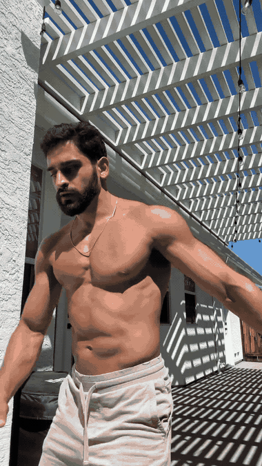
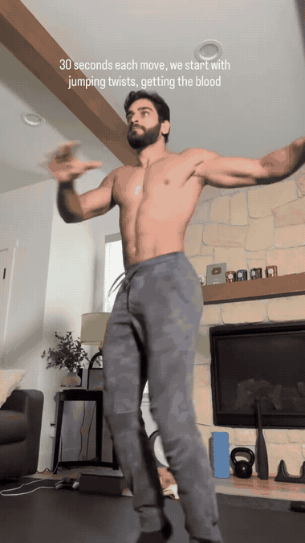
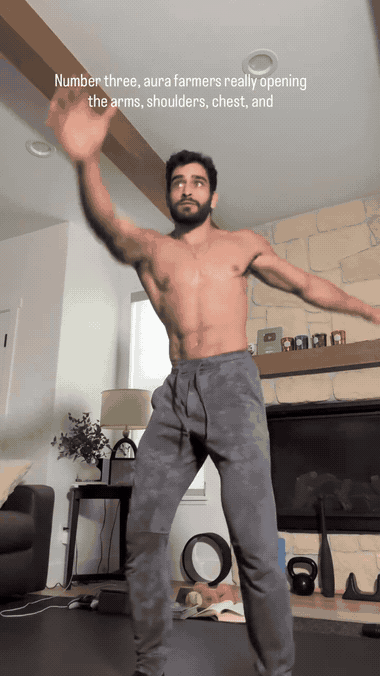
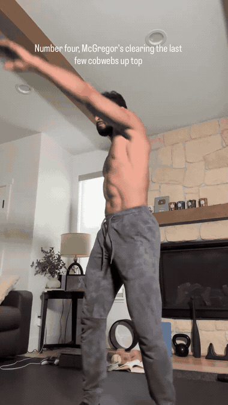
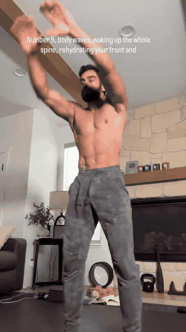
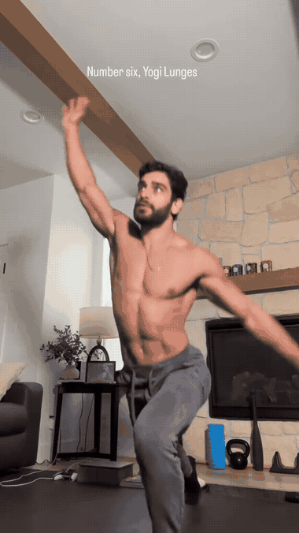
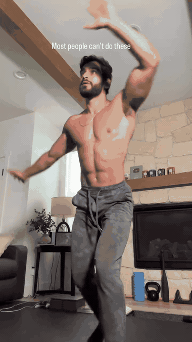
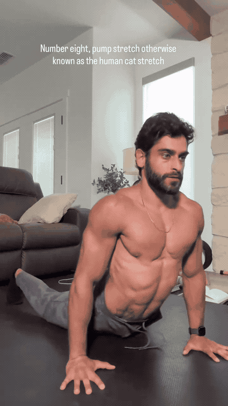
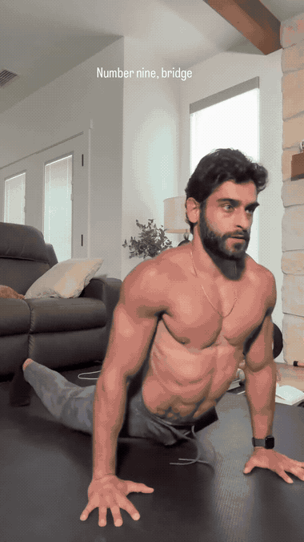
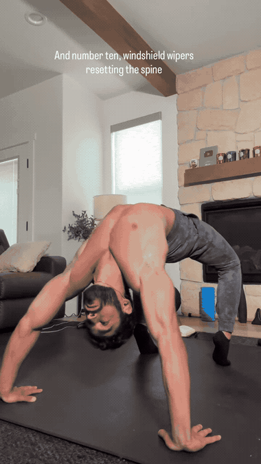

The signature rotational mobility drill. Drive with the trailing (back) arm to unlock full ribcage rotation and fascial expansion.

Light elastic bounding while rotating the hips and torso in opposition. Gets the blood pumping and rehydrates the whole-body fascial web.
Daily shoulder joint insurance using active full range of motion so you never lose overhead capacity.

Active walking mobility drill opening the arms, anterior shoulders, chest, and thoracic spine.

Dynamic loose arm crossovers to clear out any remaining stiffness in the upper back and shoulder girdle.

Segmental undulating spine waves that wake up every vertebra and rehydrate both anterior and posterior fascial chains.

Brings the central nervous system online. Integrates deep leg drive, hip flexor opening, core bracing, and single-leg balance.

Deep frontal plane lateral squats to fully mobilize the adductors, groin, hips, and ankle dorsiflexion.

Dynamic transition between cobra/upward dog and downward dog, decompressing the spine and stretching the entire posterior chain.

Complete back bridge. Unlocks buttery thoracic extension, shoulder flexion, and anterior chain mobility.

Gentle rotational reset for the lumbar spine and pelvic rotators to finish the routine ready for life.